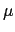

suivant: Densité de probabilité de
monter: Les fonctions de répartition
précédent: Fonction de répartition inverse
Table des matières
Index
Complément à 1 de la fonction de répartition de la loi normale : UTPN
Lorsqu'une variable aléatoire X suit une loi normale centrée réduite,
on a :
Proba(X > x)= UTPN(x).
Lorsqu'une variable aléatoire X suit une loi normale de moyenne  et
de variance v, on a :
Proba(X > x) = UTPN(,v,x).
On tape :
UTPN(1.96)
On obtient :
0.0249978951482
On tape :
UTPN(1,4,1.96)
On obtient :
0.315613696516
Attention
Les paramètres de UTPN sont la moyenne de X, la variance de X,
et la valeur x, alors que,
pour normal_cdf les paramètres sont la moyenne de X, l'écart-type
de X et la valeur x.
On tape :
UTPN(1.96)+normal_cdf(1.96)
On obtient :
1
On tape :
UTPN(1,4,1.96)+normal_cdf(1,2,1.96)
On obtient :
1
Documentation de giac écrite par Renée De Graeve